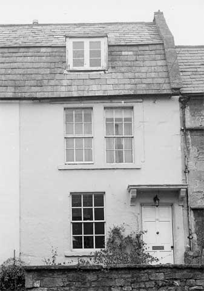

Type of building:
Mid mixed terrace
Listing:
Grade ll
Plan and elevation:
Single pile, single unit and cross entry. Two-storey with attic dormer. Plus single
storey rear extension.
Summary of the probable main building
history:
Mid 18th Century. Extended early 19th Century.

South elevation
Exterior:
One of a pair with its neighbour (No. BE 008). Ashlar construction (painted).
Front ground floor has one six-on-six sash window to left. Door to right with
chamfered dressed stone surround and flat stone hood over supported on scrolled
stone brackets. First floor has central twin six-on-six sash windows with a continuous
sill. There is an attic dormer with wood casement windows on both the front and
rear elevations. Slated mansard (gabled gambrel) roof. Coping stones. The party
wall shared chimney stack has been removed. The rear extension is under a cat-slide
roof with one shared ashlar stack and one gable end ashlar stack. The house is
built upon a sloping site rising to the rear (north-west) and above the road to
the front.
Interior:
Cross entry plan although the former rear entry now opens into the extension.
There is an arched head to this opening as there was at one time with the front
entry as well. The former rear lateral wall contains a mullion window opening
of chamfer-ogee section situated on the stairway. By the former rear entry there
is a repaired, and in places modernised, semi-circular newel staircase of elm
construction rising to the attic level. The ground floor main room houses a large
open stone fire place surround of a depressed four-centred design, chamfered with
run-out stops. Window seat. The room opens directly to the outside. In the first
floor room a late 19th Century arched iron grate is fitted. In the attic room
a small grate is fitted with (apparent) stone hobs and wrought iron bars. It is
of uncertain date, possibly mid 18th Century.
Date & development:
With its neighbour (No. BE 008), the house has interesting transitional features.
The traditional cross entry, single unit plan and mullion window contrast with
the newer sash windows and mansard roof. The house is probably of mid 18th Century
construction. The extension appears to be an early 19th Century addition (pre-1840,
per the Tithe Map)
References:
- Batheaston Tithe Map and Apportionment Schedule 1840 Somerset Record Office
Reference Pictures
| North
(rear) elevation |
Depressed
four-centred fireplace, chamfered and stopped |
Survey Drawings
| Ground
Plan |
Section |